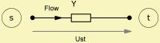
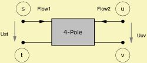
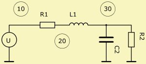

A "Lumped" or "Concentrated" Element is a symbolic representation, where the dimensions of the device are regarded way smaller than the transmitted wave-length. Predominately spatial information is lost in this transformation. For example, a bend in an acoustic duct is a geometric device but becomes a concentrated mass in the lumped element circuit.
Certain Lumped Elements are only integrated in two dimensions. Such elements are called one-dimensional-waveguides. See, for example the Duct and Waveguide component.
Certain components offer to specify extensions to the component. For example the Coil has an internal series resistance, and the Capacitor can even be extended to a resonator. This is convenient but has the drawback that internal flows and potentials cannot be observed.
 |
 |
Lumped Elements provide the flow between Nodes according to their impedance. This flow has a direction. Because spatial information is lost for Lumped Elements we have to define a symbolic direction versus which the phase of the signal is measured.
| Flow = Y·Ust | Flow1 = y11·Ust + y12·Uuv Flow2 = y21·Ust + y22·Uuv |
with admittance, Y and four-pole admittance matrix components, y11, y12, y21 and y22. Potential differences are Ust = Us - Ut and Uuv = Uu - Uv. If one of the terminals are grounded then its potential is zero.
In the script the assignment of Nodes is done with the help of parameter Node=, which each network-component provides.
Potentials, flows and powers can be observed with the help of section LE_Spectrum of an Observation Script. Typically the name of the component is specified and, for multi-ports, the Port=, at which the potential-difference, flow or power is to be investigated.
Ground is a special Node, which always has the Node-Index zero. For example
Coil 'L1' L=1mH Node=10=0
In this example there is a Coil between Node=10 and Ground.
Exception: The component Duct appears as a two-pole in the script. Internally it is expanded to a four-pole. This is convenient because Ducts are always grounded by principal. The special case where the Duct is closed means no normal velocity at the closing wall, i.e. no flow here. In the script we would simply leave the second Node open. However, because of compatibility to previous versions, you also can set the second Node to zero. Normally, this would mean pressure=0, but at the Duct-component it "tells" the program to regard this Duct to be closed.
Nodes are connection points. Within a Node we assume constant potential. At each Node we measure a potential versus ground. Between Nodes we measure a potential-difference. At a node the sum-total of flux is zero.
Nodes are forming the network. Because we have a textual-input-system we need to somehow communicate the graphical form of the network. This is done with the help of node numbers of parameter Node=.
Node-numbers can be any positive integer-number. Zero is reserved for ground. The smallest node-number is connected to the source or to the output of the preceding Filter-bank.

For exampleResistor 'R1' Node=10=20 R=1ohm Coil 'L1' Node=20=30 L=1mH Capacitor 'C2' Node=30=0 C=10uF Resistor 'R2' Node=30=0 R=10ohm